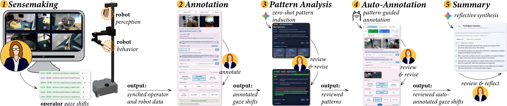

Abstract
Deploying robot fleets in complex, real-world environments requires human operators to supervise multiple robots simultaneously. Managing operator attention is a fundamental challenge of designing multi-robot supervision interfaces, encompassing both feed layout and feed content (i.e., robot behavior design). Thus far, the designers of these interfaces lack empirical guidance on the latter—how to change a robot’s behavior to capture, sustain, or relinquish operator attention during multi-robot supervision. In our vision of the future, designers should be able to use this guidance to calibrate robot behavior to different operator attention profiles. Based on the insight that operator eye gaze can serve as a robot behavior design clue, we created a pre-deployment elicitation tool called Attune. Attune automatically identifies when meaningful gaze shifts occur, provides AI-assistance for annotating why shifts occurred, and outputs a summary of operator gaze patterns for operator review. We evaluated Attune through a user study in which participants annotated the visual triggers that drew their attention. Our findings unveil variation in individual attention profiles and reveal how Attune helps characterize operator attention.

Attune pipeline: from multi-robot supervision and gaze shifts to annotation, pattern analysis, and summary.
Video Presentation
BibTeX
@inproceedings{zhou2026attune,
author = {Zhou, Puqi and Hong, Sungsoo Ray and Porfirio, David},
title = {Attune: A Self-Annotation Tool for Understanding Robot Operator Attention Profiles},
year = {2026},
isbn = {979-8-4007-2856-3/2026/11},
booktitle = {The 39th Annual ACM Symposium on User Interface Software and Technology (UIST '26)},
location = {Detroit, MI, USA},
publisher = {Association for Computing Machinery},
address = {New York, NY, USA},
doi = {10.1145/3830398.3830514},
url = {https://doi.org/10.1145/3830398.3830514}
}